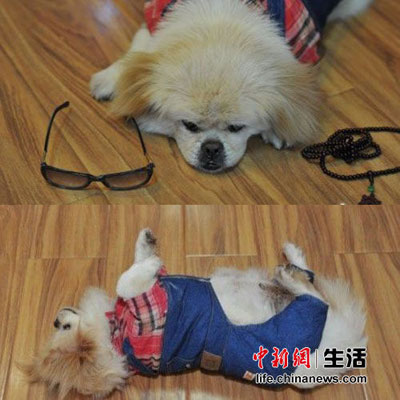

晋江狗狗两次救下主人命
哈巴狗“叶子”照片
在晋江安海，有一条叫“叶子”的哈巴狗。它的主人、南平建阳人蔡女士说，叶子曾两次救了她的命，且极通人性、充满母性。
蔡女士说，1991年的时候，她曾因感情问题，长时间把自己反锁在房间里，试图用刀片割腕。叶子咬着她父亲的裤腿，硬是把他拉到了门前，并用两只前腿敲打着门。她的父亲破门而入，这才及时救了她的命。
第二次，已近50岁的蔡女士，血压较高，有时需吃救心丸。有天凌晨4点多，她一起身便感到头晕，虽然意识到这可能是高血压引起中风的征兆，可是本能又让她想躺下休息。就在这时，几步外的叶子和它的女儿“阿福”，就用力咬住她的裤脚。蔡女士回忆，当时被两条狗这么一咬，她意识到自己不能睡下去，便艰难地撑住坐在床头，取了救心丸服下，手机按好了110和120，以备随时拨打。
而叶子，也陪着她坐了2个多小时，直到清晨6点多，她头晕稍稍减轻了，拨120去了医院，这才又保住了自己的性命。“叶子”真是一只好狗狗！